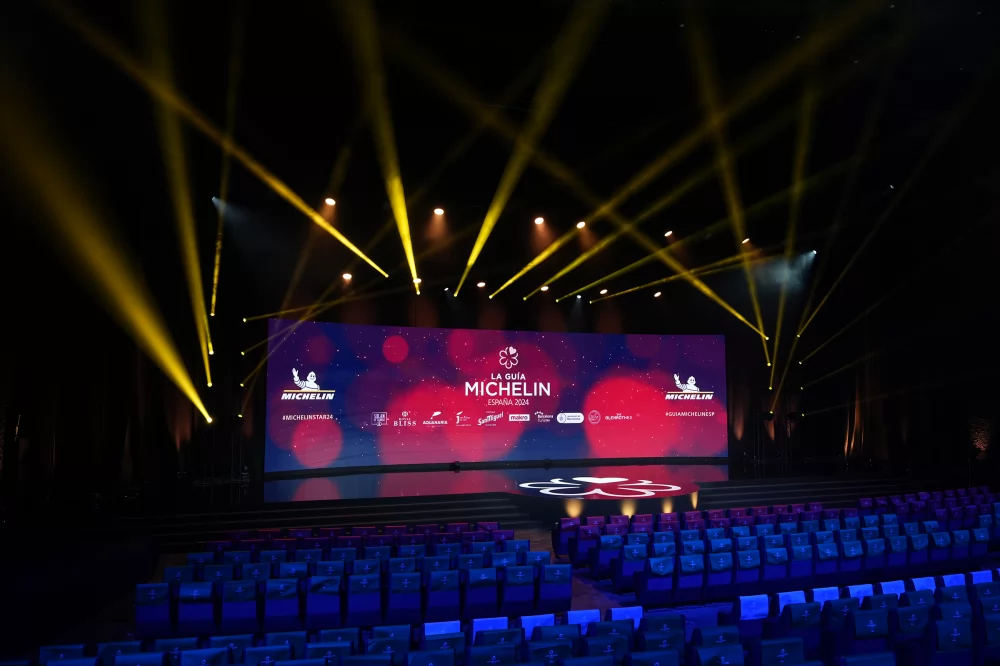
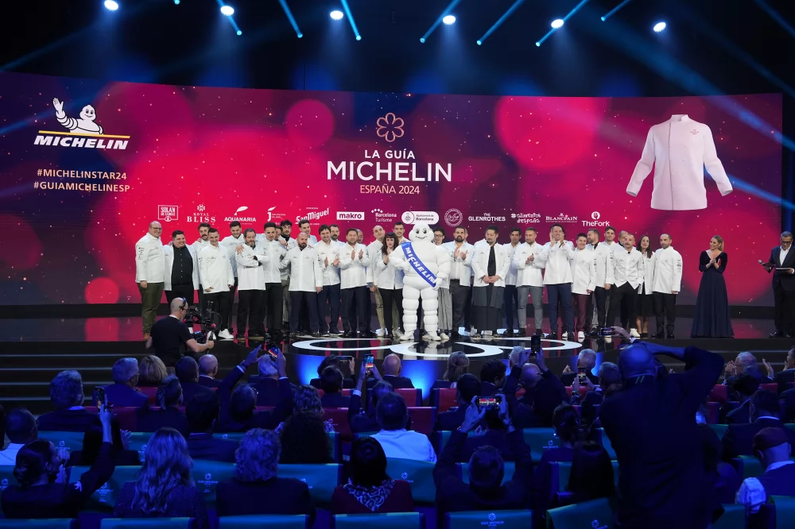
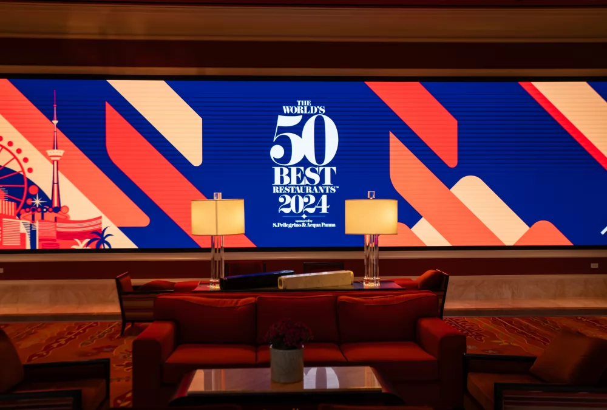

Los 15 restaurantes con 3 estrellas Michelin 2024 en España
Por Héctor Hernández 28 de noviembre de 2023

Descubre la lista de los restaurantes de España con 3 estrellas Michelin en 2024, la máxima distinción de la popular guía gastronómica francesa en su edición para España.
Leer más
Listado de restaurantes con Estrellas Michelin en 2024 España
Por Héctor Hernández 28 de noviembre de 2023

Consulta el listado completo de restaurantes españoles con estrellas Michelin en 2024 con importantes novedades tanto en la categoría de restaurantes con una estrella como en la de dos y tres estrellas.
Leer más
Lista The World's 50 Best Restaurants: los mejores restaurantes del mundo
Por Héctor Hernández 06 de junio de 2024

La guía The World's 50 Best Restaurants acaba de hacer pública la 22º edición de su lista de los mejores restaurantes del mundo en 2024 en un evento celebrado en Las Vegas y, como todos los pronósticos presagiaban si tenemos en cuenta que la segunda, tercera y cuarta posición del año anterior eran para restaurantes españoles, un restaurante español vuelve a ser el mejor del mundo casi una década después de que lo consiguiera El Celler de Can Roca, el último restaurante español en ostentar el título.
Leer más
Ver más entradas